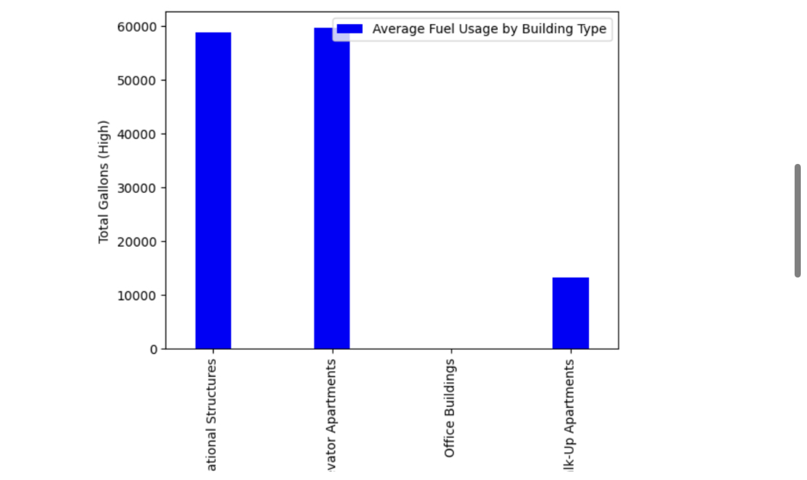

In our research, we found that the NYC Clean Heat Program incorporates renewable energy sources into the city through heat pumps.
Moreover, we learned that the DEP Boiler Registration and Greener Greater Buildings Plan are being used to try and regulate corporate energy usage as well as improve air quality.
I think what shocked me most was, despite all of the measures taken to try and improve our energy usage and overall environemtn, we still have a LONG way to go. So few buildings are making significant strides to lower or improve their usage, and, despite residential AC units providing a problem, it's mostly big corporations who are responsible.
We already know how old the city as a whole is, but Brooklyn is also the most population dense; it's ALSO incredibly residential, so we weren't sure what to expect going in. Brooklyn Heights is considered the city's first suburb, so I was expecting it to be lower than the others(which was true).
